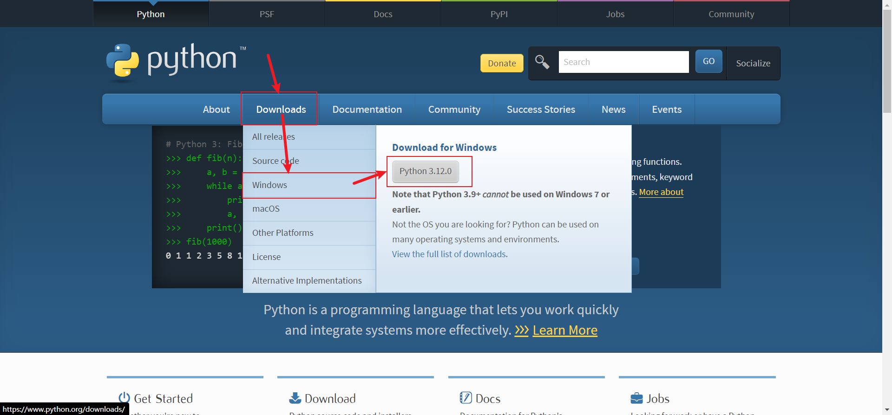
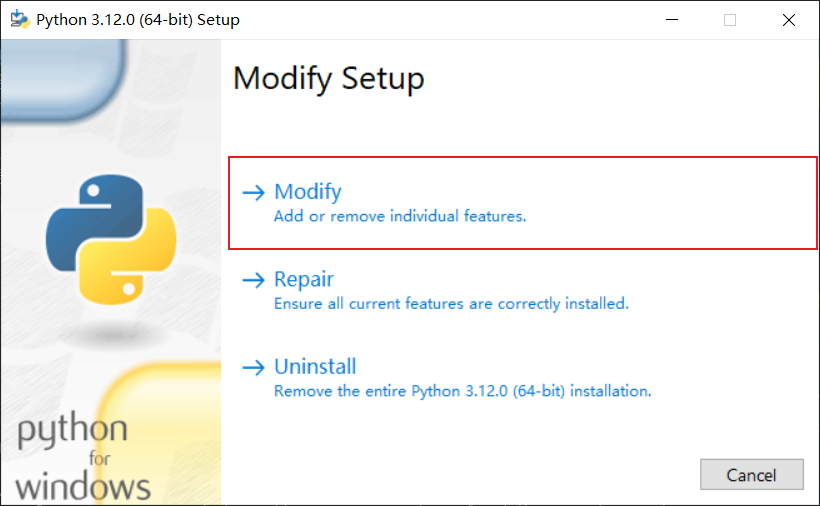
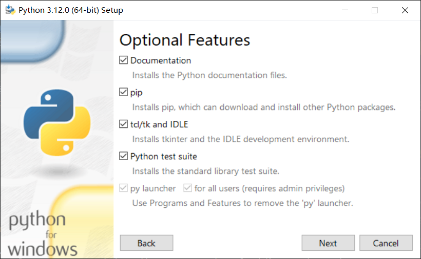
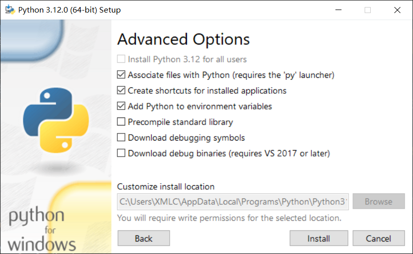
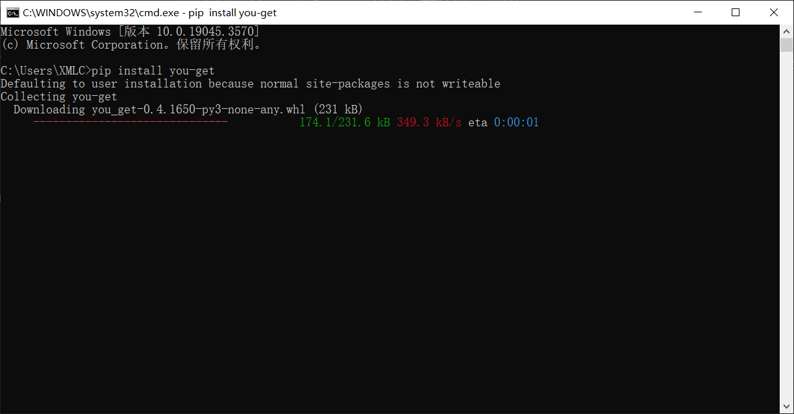
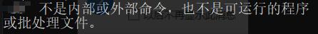
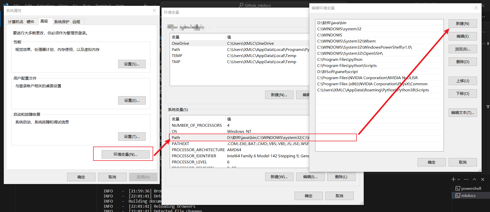

You-get
前言
you-get是基于Python的一个开源项目，可以通过视频URL下载视频。
You-GET 的优缺点一览表
| 项目 | 优点 | 缺点 |
|---|---|---|
| 1 | 可下载绝大部分的视频，目前基本没有找到不能下载的平台 | 涉及控制台、环境变量，对于小白设置复杂 |
| 2 | 可控性强，可控制画质等内容 | 依赖多，文件大 |
下载
前置依赖:pip与python
如果您已经有了，可以跳过
1.前往Python官网,选择Download->Windows->点击右边的最新版本下载。
注意:
由于更新的时间的原因，版本号与图片不一致无伤大雅。
 2.双击安装包,选择第一项"Modify"  3.直接默认即可，确保pip处于勾选状态！  4.不用动，点击install  5.下载完成后，关闭界面
控制台
1.按下Win+R键，输入"cmd",点击确定 2.输入"pip install you-get"  如果出现"Successfully installed you-get-0.4.1650"代表成功
使用
测试可用性
输入"you-get"测试命令。
以下情况正常：给出语法
如果正常:您可以进行下一步了

以下情况异常:不是内部或外部命令，也不是可运行的程序或批处理文件。

如果没给出语法的用法，请查看刚刚的安装记录是否出现黄色字体的"warning"，如果出现，请自行翻译，查看其要表达的意思
是否是"you-get目录不在环境变量中",如果是，请按下Win+S键，搜索“环境变量”,点击环境变量，随后点击环境变量->Path->新建，输入"warning中
黄字给出的路径"，然后一路确定即可。

基础语法
you-get "下载地址的URL"
高级语法
我实在不想翻译了，所以给你拷下来机翻了一下，凑合着看吧
你很有钻研精神啊，小伙子
其实这里大部分人看不懂，也许你是万里挑一的人?
usage: you-get [OPTION]... URL...
A tiny downloader that scrapes the web
optional arguments:
-V, --version Print version and exit
-h, --help Print this help message and exit
Dry-run options:
(no actual downloading)
-i, --info Print extracted information
-u, --url Print extracted information with URLs
--json Print extracted URLs in JSON format
Download options:
-n, --no-merge Do not merge video parts
--no-caption Do not download captions (subtitles, lyrics, danmaku, ...)
--postfix Postfix downloaded files with unique identifiers
-f, --force Force overwriting existing files
--skip-existing-file-size-check
Skip existing file without checking file size
-F STREAM_ID, --format STREAM_ID
Set video format to STREAM_ID
-O FILE, --output-filename FILE
Set output filename
-o DIR, --output-dir DIR
Set output directory
-p PLAYER, --player PLAYER
Stream extracted URL to a PLAYER
-c COOKIES_FILE, --cookies COOKIES_FILE
Load cookies.txt or cookies.sqlite
-t SECONDS, --timeout SECONDS
Set socket timeout
-d, --debug Show traceback and other debug info
-I FILE, --input-file FILE
Read non-playlist URLs from FILE
-P PASSWORD, --password PASSWORD
Set video visit password to PASSWORD
-l, --playlist Prefer to download a playlist
-a, --auto-rename Auto rename same name different files
-k, --insecure ignore ssl errors
-m, --m3u8 download video using an m3u8 url
Playlist optional options:
--first FIRST the first number
--last LAST the last number
--size PAGE_SIZE, --page-size PAGE_SIZE
the page size number
Proxy options:
-x HOST:PORT, --http-proxy HOST:PORT
Use an HTTP proxy for downloading
-y HOST:PORT, --extractor-proxy HOST:PORT
Use an HTTP proxy for extracting only
--no-proxy Never use a proxy
-s HOST:PORT or USERNAME:PASSWORD@HOST:PORT, --socks-proxy HOST:PORT or USERNAME:PASSWORD@HOST:PORT
Use an SOCKS5 proxy for downloading
凑合着看吧
实在太乱了
用法：您得到[OPTION]。。。URL。。。
一个小型下载程序，可以抓取网络
可选参数：
-V、 --version打印版本并退出
-h、 --help打印此帮助消息并退出
干式运行选项：
（没有实际下载）
-i、 --info打印提取的信息
-u、 --url使用url打印提取的信息
--json以json格式打印提取的URL
下载选项：
-n、 --不合并不合并视频部分
--无字幕不下载字幕（字幕，歌词，danmaku，…）
--postfix postfix下载的具有唯一标识符的文件
-f、 --force强制覆盖现有文件
--跳过现有文件大小检查
跳过现有文件而不检查文件大小
-F STREAM_ID，--格式STREAM_IID
将视频格式设置为STREAM_ID
-O FILE，--输出文件名FILE
设置输出文件名
-o DIR，--输出DIR目录
设置输出目录
-p播放器，--播放器
将提取的URL流式传输到播放器
-c COOKIES_FILE，--COOKIES COOKIES-FILE
加载cookies.txt或cookies.sqlite
-t秒，--超时秒
设置套接字超时
-d、 --debug显示回溯和其他调试信息
-I FILE，--输入文件FILE
从FILE读取非播放列表URL
-P密码，--密码
将视频访问密码设置为password
-l、 --播放列表首选下载播放列表
-a、 --自动重命名自动重命名相同名称的不同文件
-k、 --不安全的忽略ssl错误
-m、 --m3u8使用m3u8 url下载视频
播放列表可选选项：
--first first第一个数字
--last last最后一个数字
--大小PAGE_size，--页面大小PAGE_IZE
页面大小编号
代理选项：
-x主机：端口，-http代理主机：端口
使用HTTP代理进行下载
-y主机：端口，--提取器代理主机：端口
仅使用HTTP代理进行提取
--无代理从不使用代理
-s主机：端口或用户名：PASSWORD@HOST：端口，--socks代理主机：端口或用户名：PASSWORD@HOST：端口
使用SOCKS5代理进行下载
结语
you-get介绍到此为止，或许你是为了白嫖，或许你是为了离线观看，但是都逃不了最后的暴击
那——就——是
免责声明
无论如何，我不承担任何责任